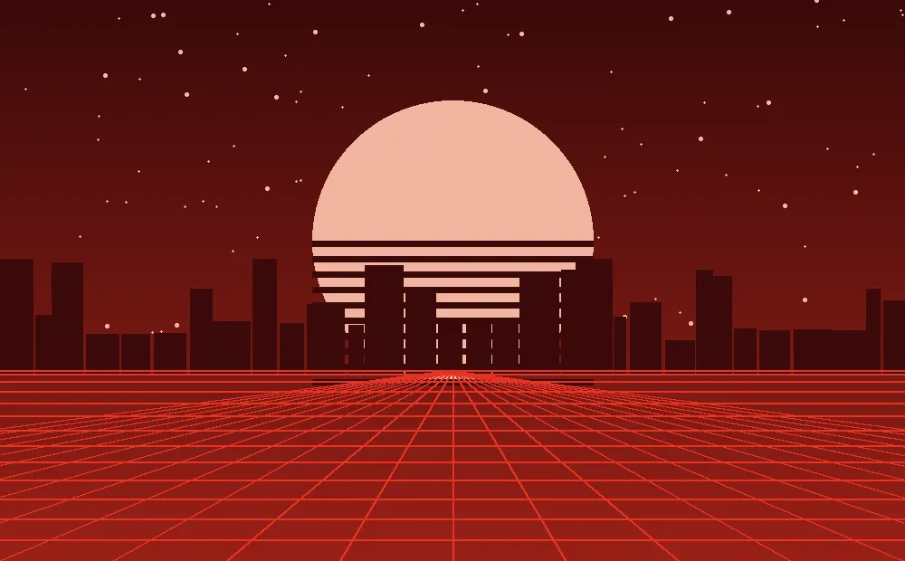
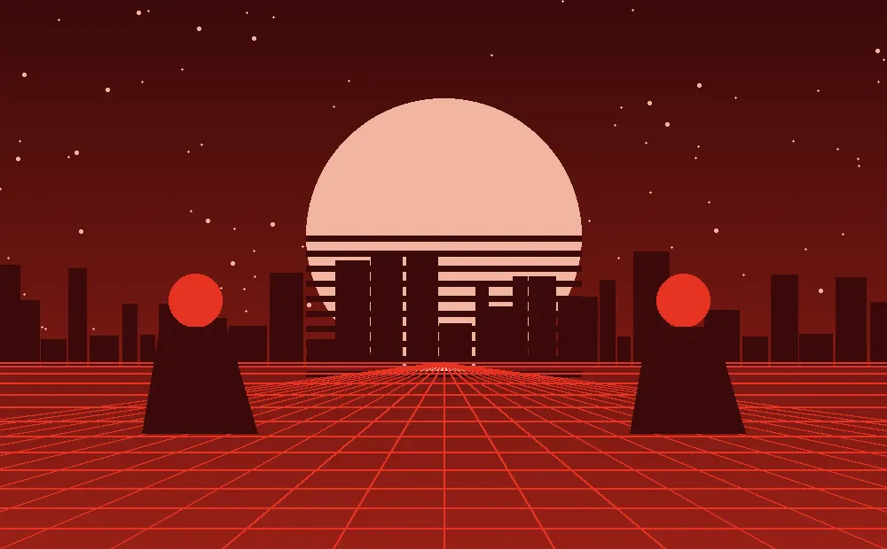
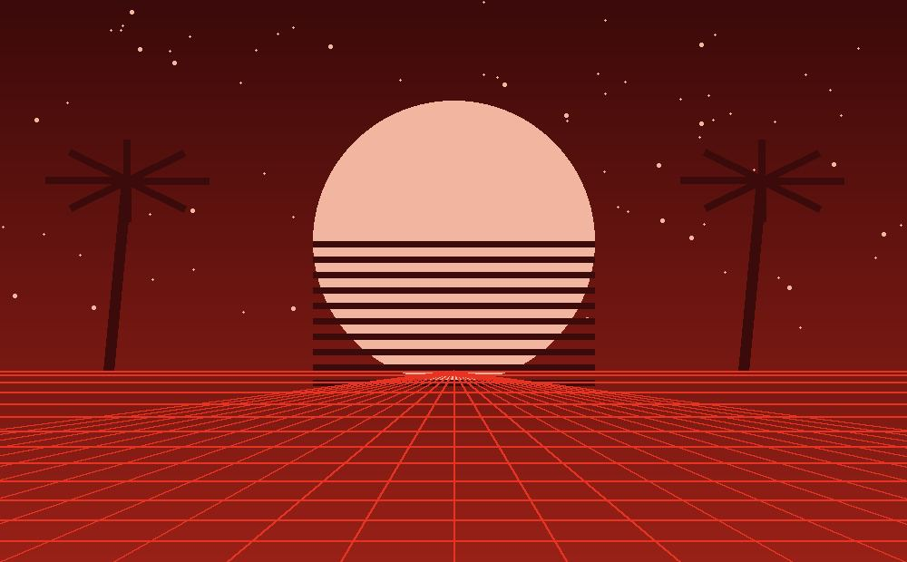

Beats statt Besinnlichkeit
Elektronische Sounds, ein durchgehender Spannungsbogen und ein gemeinsamer Countdown machen den Abend besonders.
RETRO FUTURE CHRISTMAS · 2026
Weihnachten hat einen neuen Beat. Ein Abend zwischen Neonsonne, Winterglanz und Bass – im Club Twister.
Wann?
Wo? Club Twister – genauer Standort wird noch bekanntgegeben.
Für wen? Ab 18 Jahren oder ab 16 mit gültigem Muttizettel und volljähriger Begleitperson.

Schluss mit immer denselben Weihnachtsliedern, langweiligen Dezemberplänen und endlosen Wunschzetteln: Bei Tanz in den Advent wird die Vorweihnachtszeit zum Soundtrack einer Nacht, die sich nach Zukunft und Achtzigerjahren zugleich anfühlt. Wir verbinden die warme Stimmung der Adventszeit mit elektronischen Beats, leuchtenden Horizonten und einer Tanzfläche, auf der niemand stillstehen muss.
Unser Motto lautet: Mehr Neon, weniger Lametta. Statt klassischer Weihnachtsdeko erwarten dich gestreifte Sonnen, leuchtende Raster, Sterne und eine visuelle Reise durch eine imaginäre Retro-Metropole. Dazu kommen winterliche Überraschungen, kleine Fotospots und eine Atmosphäre, die perfekt für gemeinsame Erinnerungen ist.

Musikalisch geht es von melodischem Synthpop über energiegeladenen Electro bis zu tanzbaren Remixes. Die Sets sind so geplant, dass du erst ankommen, dann eintauchen und später komplett ausrasten kannst. Auch ohne Synthwave-Vorkenntnisse findest du hier deinen Rhythmus.
Elektronische Sounds, ein durchgehender Spannungsbogen und ein gemeinsamer Countdown machen den Abend besonders.
Fotomotive, Retro-Grafiken und warme Weihnachtsfarben schaffen einen Look, den du nicht jeden Tag siehst.
Ob mit deiner Clique oder neuen Bekanntschaften: Hier beginnt die Adventszeit mit einem echten Erlebnis.
Markiere dir den Termin, trommle deine Freundinnen und Freunde zusammen und plane deine Anreise rechtzeitig. Das Event startet am . Auf der Ticketseite findest du unsere fiktiven Preisstufen und das Demo-Anmeldeformular. Für Gäste unter 18 gelten zusätzliche Einlassregeln, die du unbedingt vorab lesen solltest.

Wichtig: Diese Website ist ein Studienprojekt. Es werden keine echten Tickets verkauft und es findet keine reale Clubnacht statt.